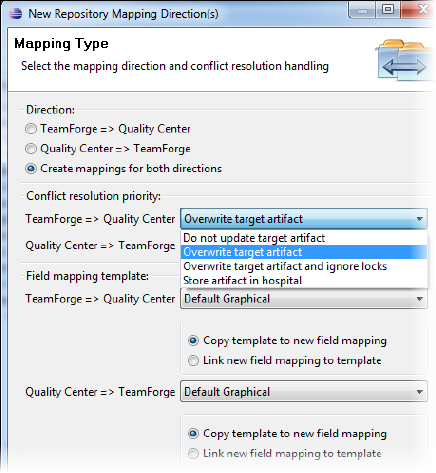
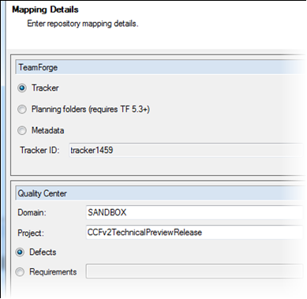

You configure a repository mapping to specify how the connector synchronizes
TeamForge with the other participant in the integration. A repository mapping has two
directions -- one from TeamForge to Quality Center, and the other from Quality Center to TeamForge.
-
To add a repository mapping with its associated directions, right-click the Repository Mappings node for your connector and select .
The repository mapping wizard is launched.

-
For each selected mapping direction, specify how potential conflicts should be resolved. You can choose to:
- Replace the target artifact's values with the source artifact's changes
- Discard the changes in the source artifact and not update the target
artifact
- Quarantine the conflicting artifact with the failed artifacts
- Overwrite the target artifact, ignoring locks.
Note: This option is available only if the target system is Quality
Center. For more information on this feature, see
this FAQ topic.
Tip: If you select Overwrite target artifact for one direction, we suggest you select Do not update target artifact for the other, so that one system will prevail in case of a conflict. However, even if you choose Overwrite target artifact for both directions, it’s extremely unlikely that the connector would pick up changes in both systems at the same instant resulting in a conflict.
-
Select a field mapping template from the dropdown, and one of these options:
- Link to the template -- changes to the template will cause your repository mapping to change as well
- Define your own field mapping based on the template -- changes to the template will not affect your repository mapping
-
Click Next.

-
Select the components you want to map in TeamForge and Quality Center.
The possible mappings are:
- Quality Center defects with TeamForge Tracker artifacts
- Quality Center requirements with TeamForge Tracker artifacts
- Quality Center requirements with TeamForge planning folder artifacts
Note:
While it is possible to map Quality Center "folder like" requirement
types to TeamForge tracker artifacts, mapping the requirement
hierarchy to TeamForge planning folders is a better option. For more
information on planning folders and the advantages they offer, click
here. You should map only
Quality Center requirement types that don't mainly act as "folders"
in Quality Center to TeamForge trackers.
-
Specify the TeamForge component ID.
- If you chose to map a TeamForge planning
folder to Quality Center requirements, browse to a TeamForge project or enter its ID.
- If you chose to map a TeamForge tracker to Quality Center requirements,
browse to the tracker or enter its ID.
-
Specify the Quality Center domain and project names.
-
If you chose to map Quality Center requirements, browse to or enter a
Requirement type.
-
Click Finish.
Note: Initially, synchronization is paused and you have the chance to review the mappings. Expand a repository mapping direction to see its field mappings; when the field mappings are in place, activate the repository mapping by
resuming synchronization.